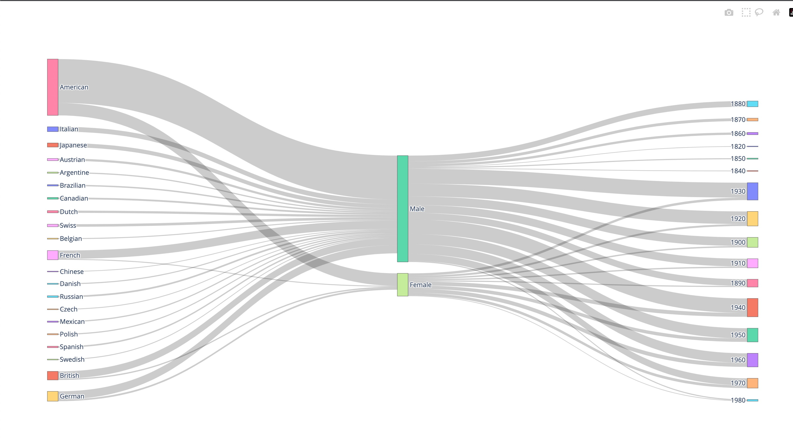

Marks
- Points
- Areas
Channels
- Position
- Represents the states in the US
- Viewers can tell which state is which
- Colours
- Represents which party won the majority
- This is a good mapping because Red and Blue refer to the party colors
Colourmap(s)
- Categorical
- Represents the 2 political parties
- It is common knowledge that these colours represent the specific parties

Marks
- Points
Channels
- Position
- Represents exit velocity (Horizontal) and launch angle (Vertical) with which the ball has been hit
- This is a good mapping because it shows the relationship between the exit velocity and launch angle of a hit
- Colours
- Represents the number of points scored on a hit
- This is a good mapping because it helps us identify the optimal areas of exit velocity and launch angle to score most points on a hot
Colourmap(s)
- Divergent
- Represents the scoring value of a hit
- This is a good mapping because the 2 colors represent the extremes of the scoring values and the colors get more neutral in the middle, which represents all hits that were between the extreme points.

Marks
- Lines
- Areas
Channels
- Size
- The area of the links between attributes represents the number of artists that fall into both the respective attributes.
- This is a good mapping because it shows the difference between the number of artist that fall into the various categories.
Colourmap(s)
- Categorical
- Represents the different attributes of an artist namely Country of Birth, Gender, and Year of Birth.
- This is a good mapping because it used to differentiate attributes and values among each other to make interpreting the diagram easy.